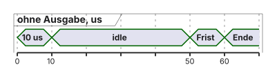
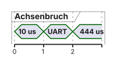
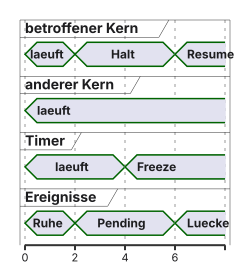
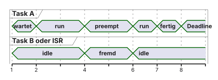
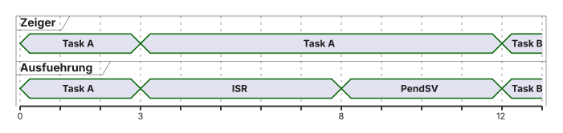

Analogie, kein physikalisches Gesetz für jede Messung:
extra Befehle, Logs, anderes Scheduling
anderes Layout, anderer Cachezustand
Halt, Buszugriffe des Debuggers, voller Tracepuffer
GPIO, Zykluszähler, ITM, DWT und ETM beantworten verschiedene Fragen und stören verschieden stark.
Klassisches Debugging: Die printf-Gefahr
„Hallo“, 8N1: 5 Byte = 50 Bit.
\[50 / 115200 \approx 434\,\text{µs}\]
Das ist die Übertragungsdauer, nicht automatisch CPU-Zeit und nicht der Halt des Chips.
Weg
CPU während der Bits
Polling
bleibt in der Ausgabe
IRQ
kurz, UART läuft weiter
DMA
Start kurz, Transfer ohne CPU
Formatierung, Locks und Puffer kommen dazu. printf ist auf dem zeitkritischen Messpfad ungeeignet. Außerhalb bleibt begrenztes Logging möglich.
Ein verpasster Termin ist ein Deadline Miss, kein automatischer Crash.
Visualisierung: Der Beobachter-Effekt
Synthetisches Modell, keine Messung. Die zweite Spur bricht die Achse: gleiche Kästchen sind nicht gleiche Zeiten.


Variante
Inhalt
Dauer
Frist 50 µs
ohne Ausgabe
Rechnung
10 µs
gehalten
mit blockierendem „Hallo“
10 µs plus 434 µs Leitung
etwa 444 µs
gerissen
Der GPIO-Puls von HIGH bis LOW ist die Zeit zwischen physischen Pinflanken. Präemption, Bus, Pad und die Auflösung des Messgeräts liegen darin. Das Messgerät sieht nicht die beiden CPU-Storezeitpunkte.
Klassisches Debugging: Breakpoints
Der betroffene Kern hält an
Der andere Kern, DMA und Peripherie können weiterlaufen
DBGMCU kann einzelne Timer oder Watchdogs einfrieren, wenn das so konfiguriert ist
Der NVIC ist keine unbegrenzte FIFO: Pending kann Flanken zusammenfassen
Puffer können überlaufen
Pending und Peripherie-FIFOs speichern nur begrenzt. Viele Flanken erzeugen nicht automatisch viele verschachtelte Stackframes.
Nach Resume ist nur rekonstruierbar, was noch in Registern, FIFOs oder Pending steht.
Das Problem des “Halt-States”
Lehrschema. Freeze gilt nur, wenn das passende Bit gesetzt ist. Es gibt keine unbegrenzte Interrupt-Warteschlange.

Der Heisenbug
Der Fehler verschwindet, weil die Beobachtung die Zeit oder das Layout ändert
Race: verschränkte Zugriffe ohne Vertrag
Priority Inversion: ein Lock plus Verdrängung des Owners
Beides kann heikel zu beobachten sein, beides ist nicht dasselbe
Der Workaround: Software Instrumentierung
GPIO und Zähler beantworten „wann bin ich hier?“
ITM schreibt Stimulus-Wörter, es formatiert keinen Text
ITM_SendChar kann auf freie Kapazität warten
Voller Puffer ist keine „winzige Seltenheit“
Laborvariante, wenn wir sie nutzen: nicht blockieren, Drops zählen, Statusbits der vorhandenen CMSIS-Version prüfen
Wir brauchen: Non-Intrusive Observation
Präzise Formulierung:
ohne extra Anwendungsbefehle
ohne den Kern anzuhalten
nicht: Einfluss immer exakt null
Prüfen: Trace an, Pfad, Puffer, Überlauf, Stall.
Zusammenfassung Block 1
434 µs sind Leitungszeit von „Hallo“
Halt stoppt nicht den ganzen Chip
GPIO misst ein Intervall, keine reine CPU-Zeit
Hardwaretrace ist eine Quelle mit eigenen Verlusten
Nicht drei gleiche Spione am SRAM. DWT sitzt an der konfigurierten Quelle des Kerns.
Was fehlt: DMA-Schreiben, der andere Kern, Cachezeilen hinter dem Store, alles außerhalb des Filters.
JTAG vs. SWD vs. Trace
Weg
transportiert
beweist nicht
SWD/JTAG
Debug
lückenlosen Trace
SWO
oft ITM/DWT
volles ETM
parallele Trace-Pins
hohe Rate, wenn vorhanden
dass das Nucleo sie hat
interner Puffer
kurz, on-chip
lange Historie
UM2408: STDC14/MIPI10 am NUCLEO-H755ZI-Q ist kein Nachweis eines 20-poligen parallelen Trace-Steckers. Pinout, Raster und Adapter am Schaltplan prüfen. Pinmux, ST-LINK-Trennung, GND, VTref, Pegel, Reset.
Modul 1: Das ITM (Instrumentation Trace)
Stimulus-Port
Software muss schreiben
Warten oder Verwerfen ist eine Implementierungsentscheidung
Drops dokumentieren, sonst sieht die Lücke wie „nichts passiert“ aus
Modul 2: Das DWT (Data Watchpoint & Trace)
Wenige Komparatoren, Konflikt mit Watchpoints
Adresse, Breite, Richtung, Maske, Datenwert und Zeitstempel hängen von der Implementierung ab
Sie sehen nicht automatisch den anderen Kern oder DMA
Ein M7-Store „1“ kann im Trace stehen, während Write-Back den Wert dem M4 vorenthält
Eine flache Kurve beweist nicht „SRAM blieb 0“
Fehlende Pakete können auch heißen: falscher Kern, falsche Adresse, zu spät aufgenommen, Filter, Verlust, Kapazität.
%%{init: {'theme': 'base', 'themeVariables': {'background': '#FFFFFF', 'primaryColor': '#FFFFFF', 'primaryBorderColor': '#E5E5EA', 'primaryTextColor': '#1D1D1F', 'lineColor': '#86868B'}}}%%
flowchart TB
ST["M7-Store Wert 1, aufgenommen"] --> C["Dirty-Cachekopie"]
C -.-> S["SRAM kann noch 0 sein"]
S --> M4["M4 liest seine Sicht"]
MISS["fehlendes Paket"] --> U["Wert unbekannt, nicht 0"]
Modul 3: Das ETM (Embedded Trace)
Komprimierter Kontrollfluss, plus Sync, Ausnahme, manchmal Zeit
Nicht „ein Bit pro Sprung“
400 MHz sind 400 Millionen Takte, nicht Instruktionen
Hypothetisches Modell: 400e6 Ereignisse mal 4 Byte = 1,6 GB/s, nicht die echte ETM-Rate und nicht Gbit/s
Rekonstruktion braucht das passende Maschinenbild, die Protokollversion und einen vollständigen Abschnitt. Eine Lücke ist ein unbekannter Abschnitt, keine erfundene Gerade.
ETM komprimiert den Kontrollfluss
Schema, kein echtes Paketformat. Der graue Abschnitt ist verloren und wird nicht interpoliert.
%%{init: {'theme': 'base', 'themeVariables': {'background': '#FFFFFF', 'primaryColor': '#FFFFFF', 'primaryBorderColor': '#E5E5EA', 'primaryTextColor': '#1D1D1F', 'lineColor': '#86868B'}}}%%
flowchart LR
C["C: if a"] --> TH["mehrere Thumb-Befehle"]
TH --> EV["symbolische Traceereignisse"]
EV --> OK["Decoder mit passender ELF"]
EV --> GAP["Sync verloren: unbekannt"]
GAP --> NEU["neuer Abschnitt nach Resync"]
Eine C-Zeile kann mehreren Befehlen entsprechen. Ohne das ELF des denselben Builds rekonstruiert das Tool den Pfad nicht.
Sync-Verlust: Strecke grau lassen.
Die TPIU und der physikalische Stecker
TPIU ist ein möglicher Ausgang, nicht der Beweis, dass jede Spur dort ankommt
Laboraufbau erst zeichnen, wenn Adapter, Active Probe und BlueBox-Modell feststehen
iC5700: Ethernet-Angabe nicht als Gigabit übernehmen, solange die Gerätebeschreibung der vorliegenden Hardwareversion das nicht sagt
FNet, Host-Ethernet und Target-Trace sind drei Kabelklassen
Einschalten und Ausschalten nur nach der Anleitung des vorhandenen Geräts. Ohne Gerät ist das keine Laboranweisung.
Keine Preisvergleiche
Schema der Rollen. Unbestätigte Kästen bleiben offen. Kein erfundener Stecker.
%%{init: {'theme': 'base', 'themeVariables': {'background': '#FFFFFF', 'primaryColor': '#FFFFFF', 'primaryBorderColor': '#E5E5EA', 'primaryTextColor': '#1D1D1F', 'lineColor': '#86868B'}}}%%
flowchart LR
T["Target, Tracequelle"] --> A["Ausgang: offen, Board prüfen"]
A --> P["Probe oder Adapter: offen"]
P --> R["Recorder: Modell offen"]
R --> H["Host-Software"]
Zusammenfassung CoreSight
Quelle
erfasst
beweist nicht
ITM
geschriebene Stimuli
rückwirkungsfreie App
DWT
gefilterte CPU-Ereignisse
SRAM hinter dem Cache
ETM
Kontrollfluss, soweit komplett
jede C-Zeile in µs
DAP
momentane Sicht
Historie
Warum Systemanalyse und nachvollziehbare Nachweise wichtig sind
Normen motivieren Nachweise. Sie sind hier keine Rechtsauskunft.
ISO 26262: Straßenfahrzeuge, nicht „jede Software ist illegal“
DO-178C: Luftfahrt-Software, Einordnung über DO-330 und AC 20-115D
IEC 61508: funktionale Sicherheit, nicht pauschal der Medizinstandard
Trace ist keines dieser Dokumente als einziges Pflichtwerkzeug. Aussagen nur mit Ausgabe und Abschnitt, wenn wir sie wirklich zitieren. Das tun wir hier nicht im Detail.
Metrik 1: Beobachtetes Laufzeitmaximum
\(\max(C_{\mathrm{beobachtet}})\) ist das Maximum dieser Läufe.
Es ist keine obere Schranke für alle zulässigen Ausführungen. Ein ungetesteter Pfad kann länger sein.
Synthetische Stichprobe, keine Messung: 12 µs, 15 µs, 14 µs. Das beobachtete Maximum ist 15 µs und keine WCET.
Der RM-Test bleibt der aus VL2: hinreichend \(n(2^{1/n}-1)\), Grenzwert \(\ln 2 \approx 69{,}3\,\%\) für große \(n\). Ein Messmaximum ohne konservative Absicherung ist kein \(C_i\) für diesen Beweis.
Ein negativer Slack verletzt diese Frist. Daraus folgt kein „illegal im Straßenverkehr“.
OS-Awareness kennt Freigabe und Deadline nicht von selbst. Die Ereignisse müssen im Trace oder im Protokoll liegen.
Metrik 3: Interrupt-Latenz
Kette, nicht eine Zahl:
Flanke → ISR-Eintritt
ISR-Laufzeit
Veröffentlichung → Task Ready
Ready → Task-Start
Start → sichtbare Reaktion
Folie zur „ersten Bottom-Half-Zeile“ meint eine Dispatchlatenz bis zu einem definierten Maschinenpunkt, nicht die IRQ-Eintrittslatenz und nicht die End-to-End-Reaktion.
Synthetisches Beispiel, keine Adaptermessung. Uhr hypothetisch gemeinsam.
Marke
Zeit
externe Flanke
100 µs
ISR-Eintritt
106 µs
Veröffentlichung
110 µs
Task Ready
111 µs
ISR-Ende
115 µs
Task beginnt
120 µs
physische Reaktion
128 µs
Daraus: 6 µs Eintritt, 9 µs ISR-Intervall, 9 µs Ready bis Start, 28 µs Ende zu Ende. Die Summe der disjunkten Stücke 6 + 4 + 1 + 9 + 8 ist 28. Die vollen 9 µs ISR nicht noch einmal addieren.
Eine Messung ist keine obere Schranke. „Erste C-Zeile“ ist bei -O2 unscharf.
Lehrdiagramm, Overhead 0, keine Messung. Eine Spur je Teilnehmer.

Zeit
Task A
fremde Arbeit
1–2 ms
wartet nach Freigabe
—
2–4 ms
läuft, 2 ms
—
4–6 ms
verdrängt
2 ms
6–7 ms
läuft, 1 ms
—
7 ms
fertig
Deadline bei 8 ms
Das ist nicht die WCET.
Metrik 4: Context Switch Overhead
PendSV ist ein Teil. Dazu können Exception-Eintritt, Rückkehr, FPU, Scheduler und die Präemption selbst gehören.
Dieselbe Zeit nicht zweimal in die Antwortzeitanalyse zählen.
2,5 µs ist ein Beispiel, keine Kennzahl des H755.
Ausblick: Code Coverage (Testabdeckung)
if (a && b), Kurzschluss: bei a == false wird b nicht ausgewertet.
Test
Eingabe a
Eingabe b
ausgewertetes a
ausgewertetes b
Entscheidung
T1 TT
true
true
true
true
wahr
T2 TF
true
false
true
false
falsch
T3 FT
false
true
false
nicht ausgewertet
falsch
Bei a == false wird b nicht ausgewertet. Die Eingabe b = true im FT-Test ist kein beobachtetes Laufzeitergebnis. Unabhängigkeit im Booleschen Modell: für a das Paar TT/FT, für b das Paar TT/TF.
Statement Coverage zählt ausführbare Anweisungen, nicht Textzeilen. Decision ist nicht Condition. MC/DC braucht diese Paare und definierte Regeln bei Kurzschluss.
Instruction Trace plus Mapping ist kein automatischer MC/DC-Nachweis. Optimierung verändert das Bild. Coverage zeigt nicht, dass die Funktion richtig ist oder die Frist hält.
Die NASA-Notiz ist ein Tutorial im Kontext von DO-178B. Das ist keine „absolute Pflicht“ für dieses Labor.
Das Werkzeug: In-Circuit Emulator (ICE)
BlueBox und winIDEA nur in der Version, die im Labor steht
Modell, Active Probe, Adapter und Zusatzmodule aufschreiben, bevor eine Folie sie zeichnet
Hier: Liste offen
Vorstellung: TASKING BlueBox
Offen, bis das Gerät da ist:
genaue Typbezeichnung
ob paralleler Trace, SWO oder nur Debug
Ethernet der Box, nicht raten
keine Gigabit-Annahme
keine externen ADIO-Pins ohne Modul
Die IDE: winIDEA
Menüpfade der installierten Version. „Plugins → FreeRTOS“ nicht als ewig gültig abschreiben.
Geladen wird die ELF des gemessenen Builds, inklusive DWARF, für jeden Kern die eigene Datei. Hash oder Build-ID notieren.
ELF: Maschinenbild, Symbole und Debugzuordnung
Adressen, Typen, manchmal Zeilen
mehrere Befehle je Zeile, Zeilen ohne Code
der Decoder braucht dasselbe Image wie der Chip
ein anderes ELF erklärt den Trace falsch, ohne dass das Tool „lügt“
Der Profiler und Trigger
Trigger brauchen freie Komparatoren und eine Route
error_flag == 1 ist ein Beispiel, keine eingebaute Fähigkeit jeder Box
„10 Sekunden alles“ hängt an Puffer und Rate
Für die Ursache oft ein Ring mit Pre-Trigger, nicht erst ab dem Fehler starten
Synthetisches Beispiel, keine Gerätekapazität: 2 MiB bei 400 KiB/s ergeben 5,12 s vor Overhead.
%%{init: {'theme': 'base', 'themeVariables': {'background': '#FFFFFF', 'primaryColor': '#FFFFFF', 'primaryBorderColor': '#E5E5EA', 'primaryTextColor': '#1D1D1F', 'lineColor': '#86868B'}}}%%
flowchart LR
U["Ursache im Pre-Trigger"] --> TR["Trigger"]
TR --> N["begrenzter Nachlauf"]
N --> O["älterer Inhalt wird überschrieben"]
Das Problem der OS-Sichtbarkeit
pxCurrentTCB im lokalen M4-Kernel: die ausgewählte Task.
Während der ISR zeigt der Zeiger oft weiter auf sie, obwohl kein Taskcode läuft.
Der Wechsel liegt im Context Switch und ist nicht zwingend der erste Zyklus der neuen Task.
Ein wiederverwendeter TCB-Pointer ist keine ewige ID. Layout der eingesetzten Kernelversion prüfen. SMP-Strukturen sind hier nicht der M4-Kernel.
OS-Awareness (Betriebssystem-Bewusstsein)
Zwei Stufen:
Running: aus pxCurrentTCB und dem Trace, ISR und PendSV daneben
ORTI/OSEK bleibt etwas anderes als FreeRTOS-Awareness. Queues können extra Registrierung brauchen.
Wie winIDEA FreeRTOS visualisiert
Lehrschema, keine Laboraufnahme. Menüs gelten nur für die installierte Hilfe.

Beide Kernspuren gleichzeitig nur, wenn beide Quellen wirklich korreliert aufgenommen werden. Sonst zwei Aufnahmen und keine Subtraktion der Zeitachsen.
Der OSEK/ORTI-Standard (Automotive)
ORTI beschreibt OSEK/AUTOSAR-OS-Objekte
FreeRTOS-Awareness ist ein anderes Plugin und ein anderes Layout
Beides nicht vermischen, auch wenn beide „Tasks“ zeichnen
Laborvorbereitung: Tracing im Einsatz
Ohne Spezialhardware: GPIO um die Funktion oder CYCCNT desselben Kerns. Lehrumrechnung, keine Boardmessung: bei 400 MHz sind 1000 Takte 2,5 µs, bei 200 MHz 5 µs. Den Zähler des anderen Kerns nicht subtrahieren.
/* Ungebautes Lehrbeispiel. CYCCNT nur, wenn der Kern ihn hat. */uint32_t before = DWT->CYCCNT;uint32_t result = work_under_test();uint32_t after = DWT->CYCCNT;uint32_t delta = after - before;/* kurz, kürzer als ein Umlauf */(void)result;/* Ergebnis benutzen, damit der Compiler work nicht streicht */
work_under_test ist eine benannte Funktion mit verwendetem Ergebnis, keine leere Hülle. Die Differenz enthält Unterbrechungen, solange der Zähler läuft. Reine Task-CPU-Zeit braucht eine Running-Zuordnung. Kein printf zwischen den beiden Lesungen.
Versuch A: eine uint32_t-Variable mit alleinigem Schreiber, Werte 0, 1, 2 nach dokumentierter Init. Ein fehlendes Anfangspaket ist nicht der Wert 0.
Versuch B: non-cacheable Ping-Pong aus VL6. Druck 1, 3, 5. Die 500 ms liegen außerhalb der IPC-Messung.
Versuch C: separates Image, D-Cache an, Region nachweislich Write-Back. Hypothese, kein Drehbuch: M7-Store 1 kann da sein, M4 liest weiter 0. Kein garantierter Freeze. Timeout und Abbruch wie in VL6.
Versuch D: ein Job mit definierten Kanten. Min, Max, Anzahl, Auflösung, Bedingungen. Verluste machen die Summe ungültig.
Lehrversuche A bis D, zu Folie Labor
Jeder Kasten ist ein Vertrag. Erwartete Werte sind Lehrannahmen, keine Targetmessung. Abbruch: Timeout wie in Vorlesung 6, Shared-Block nicht neu initialisieren, solange die Gegenstelle läuft.
Feld
A lokale Variable
B Ping-Pong
C Cachefehler
D ein Job
Frage
fehlt der Anfang?
Roundtrip einer Uhr
sieht M4 den Store?
CPU, Antwort, Slack
Kern
ein Kern, alleiniger Schreiber
M7 misst, M4 antwortet
separates M7-Image
M4-Task
Anfang/Ende
vor erstem Schreiben und nach 0, 1, 2
um Veröffentlichung und Antwort
Store und benannter M4-Leseweg
Freigabe bis Jobende, Running-Abschnitte
Quelle
DWT oder synthetische Tabelle
Marker oder CYCCNT des M7
DWT-Store und M4-Beobachtung
Kernelereignis oder CYCCNT/GPIO
Uhr
lokale Zählung, Frequenz prüfen
dieselbe M7-Uhr
nicht zwei CYCCNT subtrahieren
eine benannte Uhr
Enthalten
nur diese Schreibfolge
M4-Arbeit, Poll, Rückgabe
kein Logging im Fenster
Interrupts nur, wenn die Definition sie einschließt
Abbruch
kein Paket als 0 lesen
500 ms Pause außerhalb
Cachewartung aus
Lücken aus der Summe
Versuch A ohne DWT: eine synthetische Ereignistabelle zeigt „kein Paket“ und „Paket 0“ als zwei Zeilen. Versuch B behält ipc.magic, ipc.state, ipc.payload und die nicht cachebare MPU-Basis. Druck 1, 3, 5 ist das Protokoll. Versuch C prüft CCR, Shareability und Überlappung. Weiterhin shareable kann die Cachewirkung verhindern. Versuch D nennt Min, beobachtetes Max, Anzahl, Einheit, Auflösung und die Zahl ausgeschlossener Jobs. Das Maximum ist keine WCET.
Schritt 3–4: FreeRTOS Awareness & Profiler
Running-Profil der M4-Task: wiederkehrendes Delay ist Blocked/Ready/Running im Polling, kein eingefrorener Kern.
osDelay(1) ist ein Tick. Die Poll-Latenz ist nicht nur die Umschaltzeit.
Zustandshistorie nur mit der zusätzlichen Konfiguration und als instrumentierte Variante beschriftet.
Schritt 5: Die Aufnahme & Analyse
Diagnose, je eine Prüfung:
Symptom
Prüfung
keine Verbindung
Versorgung, Reset-Reihenfolge, richtiger Adapter
nur ein Kern
ELF und Core-Zuordnung
keine Datenpakete
Komparator, Adresse, Breite, Startzeit
falsche Achse
Zeitquelle, nicht nur 400 MHz
Anfang fehlt
nicht als 0 werten
Verluste
Lücke markieren; Summen nur über vollständige Abschnitte. Nach neuer Sync kann ein späterer Abschnitt separat gelten
falsche Tasks
Kernelversion, TCB-Layout
nur Running
State-Profiling fehlt
Cachefehler bleibt aus
CCR, MPU, Neustart, Debug-Cachewartung aus
Zusammenfassung des Tages
Messfrage, Quelle, Grenze
434 µs Leitungszeit, 3 ms CPU, 6 ms Antwort, 1 ms Slack im Lehrjob
DWT am CPU-Zugriff, nicht als SRAM-Monitor
ETM rekonstruiert Pfade, solange das Bild vollständig ist
\(\max(C)\) ist kein WCET-Beweis
Hardwareliste und gleichzeitige Dual-Core-Traces bleiben offen
Anhang: offene Konfiguration, zu Folie 40
Keine Laborbehauptung. Spalten: Lehrannahme, im Kursaufbau zu prüfen, Prüfstelle.
Punkt
Lehrannahme
zu prüfen
Prüfstelle
Bauteil
STM32H755, Nucleo aus VL6
Boardrevision
Aufdruck, UM2408
Firmware
M7 Bare Metal, M4 FreeRTOS
ELF je Kern, Optimierung
Build, Map
Takt
400 und 200 MHz nur als Rechnung
Clock-Tree
Cube-Clock, Register
CYCCNT
Zähler des einen Kerns
Freigabe, Halt, Sleep
TRM, CMSIS-Header
Tracepfad
Konzept ITM, DWT, ETM
Pin, Adapter, Recorder
Schaltplan, Gerät
BlueBox, winIDEA
Rollen, keine Modelle
Version 9.26.20 ist nur online
Installation
Zeitkorrelation
eine Uhr je Messung
zwei Kerne gemeinsam
Aufnahmeprotokoll
Selbstkontrolle, kurz: 434 µs sind Leitungszeit. Ein Breakpoint kann einen Race verschieben. Viele IRQ-Flanken im Halt erzeugen nicht viele Stackframes. ITM_SendChar kann warten. Ein DWT-Store 1 ist kein M4-SRAM. Ein fehlendes Paket ist nicht 0. Der ETM-Decoder braucht dasselbe Maschinenbild. Zwei CYCCNT verschiedener Kerne sind nicht eine Differenz. Der Lehrjob hat 3 ms eigene CPU-Zeit und 6 ms Antwortzeit. Decision Coverage ersetzt Condition Coverage nicht, weil im FT-Test b nicht ausgewertet wird. Nach einem Verlust gilt erst der neu synchronisierte Abschnitt.